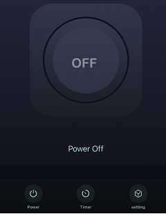
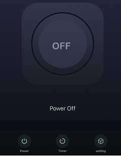

Pythonista / IOS Automations - Using a Switch
One of the values that we as programmers look for is the practicality in our life, whether in our personal or professional life we always look for improvements of our activities. One of the issues sought in the market that impact our personal lives is the Smart house or Home Automation, which consists of automating or monitoring our domestic tasks and environments using internet connectivity and integrated systems.
On IOS you can find systems and products integrated with Homekit and Shorcut Automations, both native to Iphone. Unfortunately Apple’s products tend to be more expensive on the market and for that reason, I tried to create alternatives to create automations with a lower price.
Uma das coisas que nós, programadores, buscamos é a praticidade em nossa vida, seja em nossa vida pessoal ou profissional sempre buscamos o aperfeiçoamento de nossas atividades. Um dos assuntos procurados no mercado que impactam nossa vida pessoal é a Smart house ou Home Automation, que consiste em automatizar ou monitorar nossas tarefas domésticas e ambientes utilizando a conectividade com a internet e sistemas integradores.
No IOS você pode encontrar sistemas e produtos integrados com o Homekit e Automations, ambos nativos do Iphone. Infelizmente os produtos Apples tendem a ser mais caros no mercado e por isso, eu busquei criar alternativas para criar automações com um preço menor.
The Switch

Smart Breaker
For this first attempt I used a Smart Breaker that I bought from one of these Chinese sites, where it is easily found. It can be used as a energy switch and easily installed. I did not want to change the electrical installation of my house (because I am renting) and instead I adapted a male and female socket as in the figure below, so I might reuse it when I want to change devices, but you can adapt it according to your need.
Para este primeira tentativa eu utilizei um Smart Breaker que comprei de um destes sites chineses,onde é facilmente encontrado. Ele é pode ser utilizado como um interruptor de energia e facilmente instalado. Eu não quis mudar a instalação elétrica da minha casa (pois estou alugando) e ao inves disso adaptei uma tomada macho e fêmea como na figura abaixo, assim posso reutiliza-lo quando quiser mudar de dispositivo, mas você pode adapta-lo de acordo com sua utilização.
Complete Smart Breaker
Connection to Tuya and IOS
SmartLife app connects to many devices and provides interfaces to operate each one of them. To establish the connection, just make sure that your device is on the same network as your smartphone and that the network frequency is compatible with the device (some devices only work on the 2.4 Ghz frequency).
 

It is a good application but Apple doesnt recognize Tuya devices as official and therefore they do not integrate with Iphone Homekit and also does not connect with the iPhone’s Shortcuts, so we will use Pythonista to trigger and automate the device.
Por mais que seja um bom aplicativo, a Apple não reconhece os dispositivos Tuya como oficiais e por isso eles não se integram com o Homekit do Iphone e também não se conectam com o Shortcuts App do Iphone, por isso vamos utilizar Pythonista para acionar e automatizar o dispositivo.
Pythonista for IOS
Pythonista is an app that allows you to run Python on your SMartphone. It is paid (approximately $ 9.99) but is great for running some applications. It already has some packages installed but to install other packages it is necessary to install stash package that allows you to install other packages (follow the instructions on the link to install it). After installation, we will need another API to access Smart Break, TinyTuya package. With it we will have to access all SmartLife devices connected to the network and access some functions of it.
import tinytuya
DEVICEID=‘YOUR_DEVICE_ID’
DEVICEIP=‘YOUR_IP’
DEVICEKEY=‘YOUR_DEVICE_KEY’
d=tinytuya.OutletDevice(DEVICEID, DEVICEIP, DEVICEKEY)
d.set_version(3.3)
data = d.status()
switch_state = data[‘dps’][‘1’]
if switch_state==False:
printmsg=“ Acendendo Abajur …”
else:
printmsg = “ Apagando Abajur …”
print(printmsg)
data = d.set_status(not switch_state)